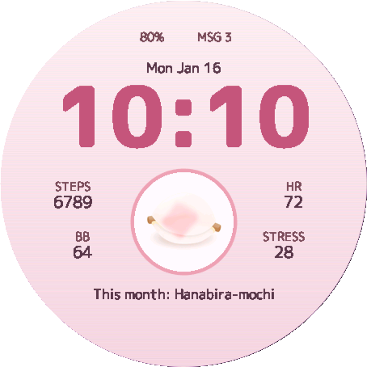
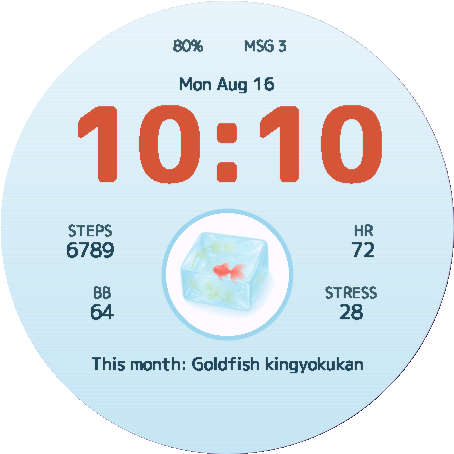
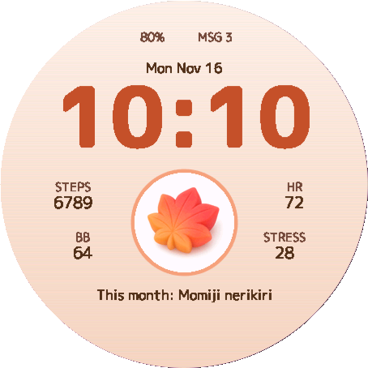
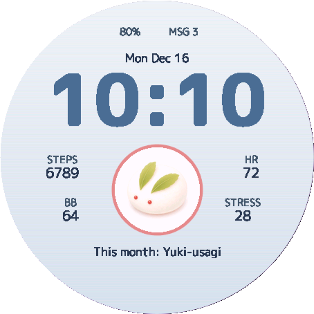

Wagashi Pastel | A Digital Watch Face for Garmin with a Japanese Sweet for Every Month
Wagashi Pastel is a digital watch face for Garmin with a Japanese sweet (wagashi) for each month. A picture of the month's sweet sits in the middle like a small plate, and the background and digits take on soft pastel colours chosen to match it.
In short: the sweet and colours change with the month, across all twelve months, and you can fix them to one month in the settings. It is a paid watch face, and every feature is free to try for 24 hours after you install it.
Wagashi Pastel
A digital watch face with a Japanese sweet for every month, in soft pastel colours.
⌚ View on Garmin Connect IQWho is it for?
- Anyone with a supported Garmin watch who wants soft, seasonal colours on the dial
- People who like Japanese sweets and seasonal Japanese things
- Anyone who wants to keep the colours and sweet of a favourite month
- Anyone who still wants steps, heart rate and other data on the face
A sweet for every month
| Month | Sweet |
|---|---|
| January | Hanabira-mochi (New Year mochi with burdock) |
| February | Tsubaki-mochi (mochi between camellia leaves) |
| March | Sakura-mochi (pink mochi in a cherry leaf) |
| April | Kusa-mochi (mugwort mochi with red beans) |
| May | Kashiwa-mochi (mochi in an oak leaf) |
| June | Minazuki (red beans on white uiro) |
| July | Waka-ayu (sweetfish-shaped sponge cake) |
| August | Goldfish kingyokukan (goldfish in clear jelly) |
| September | Tsukimi-dango (moon-viewing dumplings) |
| October | Kuri-kinton (sweet chestnut ball) |
| November | Momiji nerikiri (maple leaf bean paste sweet) |
| December | Yuki-usagi (snow rabbit sweet) |
- The name of the sweet is shown under the picture (for example "This month: Sakura-mochi"). You can turn the name off in the settings.
- There is no weather and no animation.





* Screenshots are from the simulator (Venu 3) with the watch language set to English. The data values are examples.
* The icon and the watch face illustrations are based on images made with AI (Canva AI).
On the dial
| Item | Details |
|---|---|
| Time | Large digital time (12- or 24-hour, following your watch setting) |
| Date | Date and weekday |
| Top | Watch battery (%) and notification count, shown small |
| Four data fields (two on each side of the sweet) | Choose steps, heart rate, body energy level (BB), stress, calories burned, distance (km or mi, following your watch's units), floors climbed, active minutes (this week), seconds, or off. Large step and calorie counts are shortened (for example 12.3K); a field shows "--" when a value is not available |
Settings
- Season colours: follow the month, or fix them to one month (January to December)
- Show the name of the sweet (on / off)
- Data field 1-4 (left upper, right upper, left lower, right lower). Defaults: steps, heart rate, BB, stress
Always-on
- In low-power (always-on) mode, the face shows only the time and the two upper data fields, in grey on black, without the sky, the sweet or its name.
- The display shifts by a few pixels every minute to help reduce the risk of AMOLED burn-in. A seconds field shows "--" in this mode.
Compatible watches
49 Garmin watches with round AMOLED displays: Forerunner 70 / 165 / 165 Music / 170 / 170 Music / 265 / 265S / 570 (42 / 47 mm) / 965 / 970, Venu 2 / 2 Plus / 2S / 3 / 3S / 4 (41 / 45 mm), vívoactive 5 / 6, fēnix 8 AMOLED (43 / 47 / 51 mm) / fēnix 8 Pro (47 / 51 mm) / fēnix E / fēnix 9 (43 / 47 mm) / fēnix 9 Pro (43 / 47 / 51 mm), epix (Gen 2) / epix Pro (Gen 2) (42 / 47 / 51 mm), Instinct 3 AMOLED (45 / 50 mm), MARQ (Gen 2), Approach S50 / S70 (42 / 47 mm) / S72 (43 / 47 mm), Descent G2 / Mk3 (43 / 51 mm), D2 Air X10 / Mach 1 / Mach 2 / Mach 2 Pro (including tactix 8, quatix 8 and other models on the same platforms)
For other models and other products, see the Garmin compatibility chart.
Languages
- The watch face is displayed in English and Japanese. The date, the name of the sweet and the labels are in Japanese when the watch language is Japanese, and in English otherwise.
- Purchase instructions on the watch are shown in 9 languages, following the watch language (English for other languages).
Price and how to buy
Wagashi Pastel is a paid watch face (one-time purchase). Every feature is free to try for 24 hours after you install it. There is no subscription. Please check the price on the Connect IQ store page.
How to buy, in three steps:
- When the trial ends, the dial shows a QR code and a 6-digit code.
- Scan the QR code with your phone (or open www.kzl.io/code and enter the code), then pay once with KiezelPay (card or PayPal).
- The face unlocks automatically (this can take a few minutes). Other supported watches on the same Garmin account do not need a second purchase.
Payment is handled by the third-party service KiezelPay, not Garmin.
See How to buy a paid Garmin watch face for the screens on the watch and what to do if it does not unlock.
FAQ
Q. Is Wagashi Pastel free?
A. It is a paid watch face (one-time purchase). Every feature is free to try for 24 hours after you install it. After the trial, one purchase unlocks everything. There is no subscription.
Q. Can I keep my favourite month?
A. Yes. Fix "Season colours" to any month from January to December in the settings, and the colours and sweet stay on that month.
Q. Can I hide the name of the sweet?
A. Yes, you can turn it off in the settings.
Q. Does it show the weather? Is it animated?
A. No weather and no animation.
Q. Where do I pay?
A. Payment is handled by KiezelPay, a third-party service, not by Garmin. When the trial ends, the dial shows a QR code and a purchase code; scan the QR code with your phone, or open www.kzl.io/code on your phone or computer and enter the code to pay.
Q. Do I need to buy it again for another Garmin watch?
A. No. Other supported watches on the same Garmin account do not need a second purchase.
Japanese sweets on your wrist
Try it free for 24 hours and see how the colours look on your watch.
⌚ View on Garmin Connect IQQuestions and bug reports
For questions, bug reports or suggestions about this product, please use the contact form. The button below opens the form with the product name filled in. What to include in a bug report is listed on the contact page.
Open the contact formGarmin, Connect IQ, fēnix, Forerunner and Venu are trademarks of Garmin Ltd. or its subsidiaries. The products on this page are made by SIGN (Yuichi Sato) and are not made by Garmin.